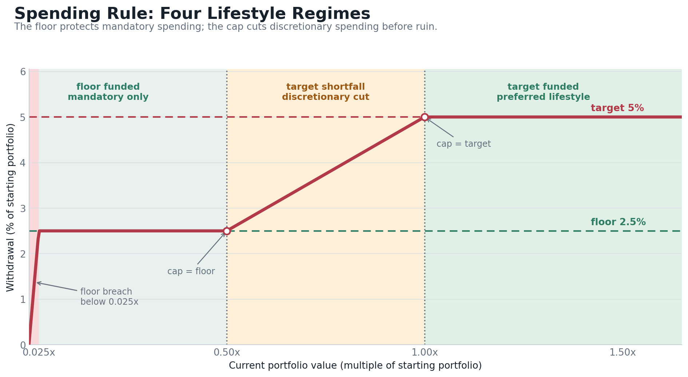
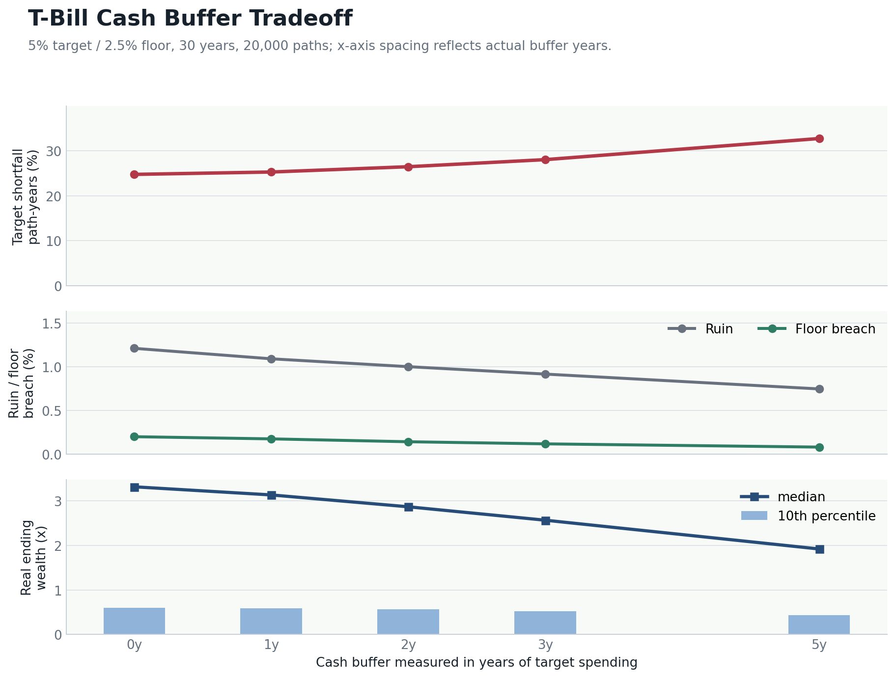
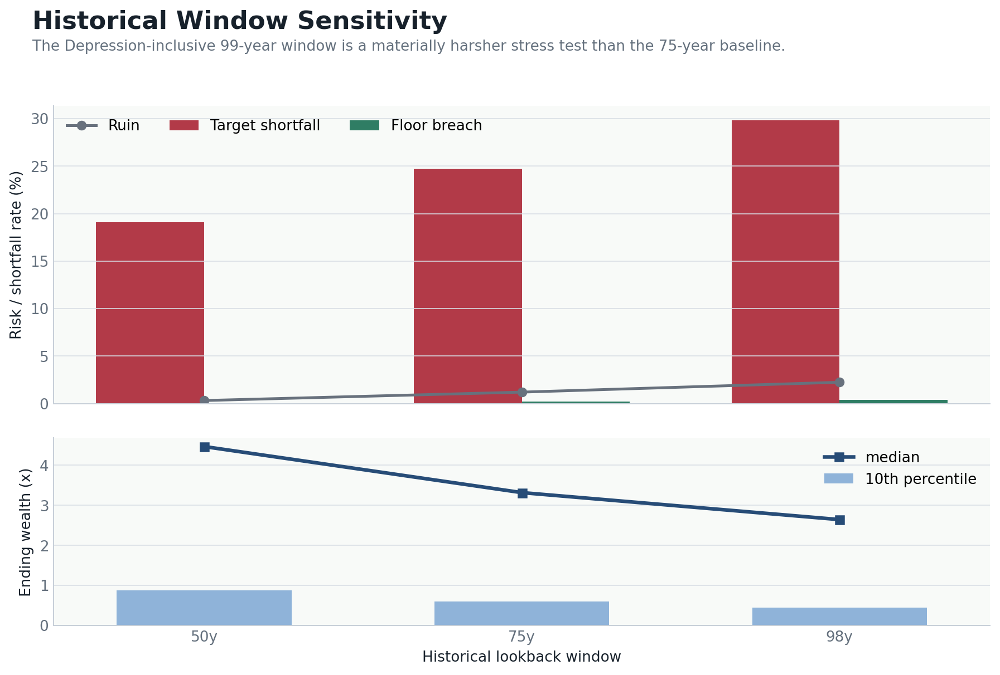
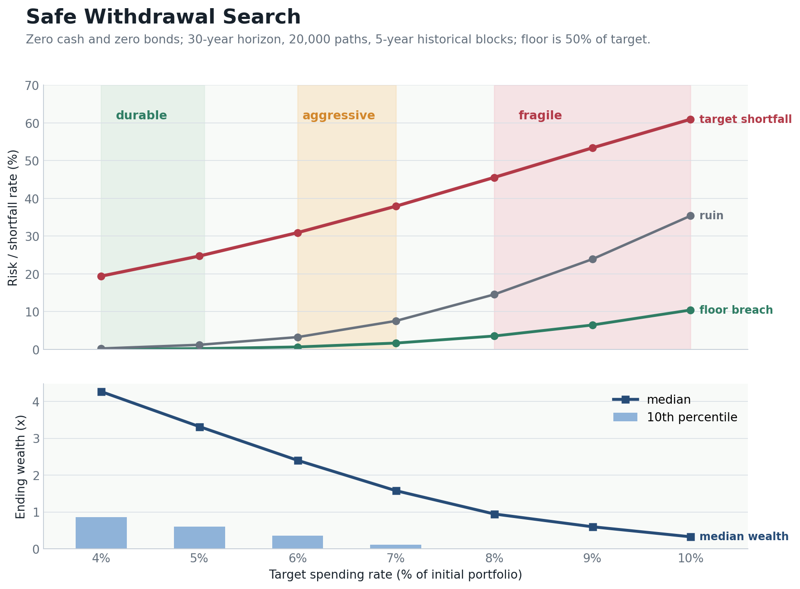
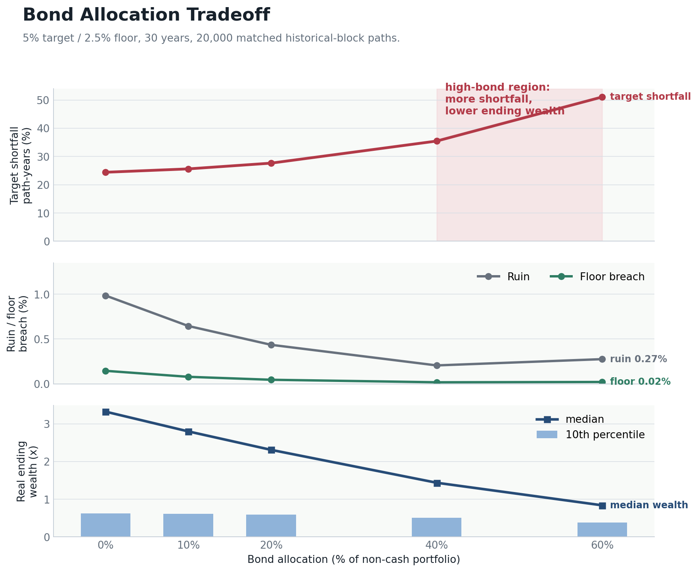

The Story
Imagine someone retiring with a portfolio of a few million dollars. Some spending is mandatory: food, basic housing, utilities, insurance, taxes, and health care. Other spending is discretionary: travel, nicer housing, gifts, upgrades, and the parts of life that make retirement feel abundant.
That budget naturally creates two retirement objectives. The target is the preferred lifestyle. The floor is the minimum acceptable lifestyle. A target shortfall means vacations, upgrades, or housing choices get cut. A floor breach means the mandatory budget is no longer supported.
This report stress-tests the traditional advice of a 60/40 portfolio and the 4% rule against that target-and-floor reality. The finding is direct: under this flexible spending objective, the generic 60/40 answer solves the easy metric, literal ruin, while weakening the harder objective, maintaining the target lifestyle.
| Benchmark | Target / floor | Bonds | Ruin | Target shortfall | Final median |
|---|---|---|---|---|---|
| 4% stock-only | 4% / 2% | 0% | 0.23% | 19.40% | 4.27x |
| Traditional 4% 60/40 | 4% / 2% | 40% | 0.01% | 26.01% | 2.06x |
| 5% stock-only flexible baseline | 5% / 2.5% | 0% | 1.21% | 24.73% | 3.32x |
| 5% 60/40 | 5% / 2.5% | 40% | 0.31% | 36.13% | 1.41x |
The classic 4% 60/40 plan looks safe if the only question is ruin. But it has more target-shortfall years and less than half the median ending wealth of the 4% stock-only plan. It also delivers a lower target lifestyle than the 5% stock-only baseline while ending with much less wealth.
Scenario And Spending Rule
Food, basic housing, utilities, insurance, taxes, health care, and other expenses that cannot be cut without changing the retiree's minimum acceptable life.
Vacations, nicer housing, upgrades, gifts, and other spending that can be reduced when markets are bad without immediately creating ruin.
The report converts that real-world budget into percentage rules rather than one hardcoded starting portfolio. The baseline target is 5% of the initial portfolio, inflation-adjusted. The minimum floor is half of target spending, or 2.5% of the initial portfolio.
| Starting portfolio | Target spending (5%) | Minimum floor (2.5%) |
|---|---|---|
| $2M | $100,000 | $50,000 |
| $3M | $150,000 | $75,000 |
| $4M | $200,000 | $100,000 |
| $5M | $250,000 | $125,000 |
| $6M | $300,000 | $150,000 |
| $10M | $500,000 | $250,000 |
For the 5% baseline, the withdrawal rule is:
target = 5.0% of initial portfolio, inflation adjusted floor = 2.5% of initial portfolio, inflation adjusted cap = 5.0% of current portfolio after that year's market return withdrawal = min(current portfolio, max(floor, min(target, cap)))
The floor can override the cap. If the remaining portfolio cannot fund the floor, the withdrawal is limited to the remaining portfolio, and that year is counted as a floor breach.

Model
The simulations use 20,000 Monte Carlo paths, annual returns, historical CPI inflation, and historical block bootstrap. The main lookback window is 1951-2025 from Aswath Damodaran’s annual return dataset, using the S&P 500 total-return series with dividends reinvested.
Inflation comes from FRED CPI-U, calculated December-to-December. Stock, bond, T-bill, and inflation records are joined by year and sampled from the same 5-year historical blocks. Cash buffers are modeled with the historical T-bill return from the sampled year.
Experiment 1: Cash Buffer
This experiment varies the cash buffer from 0 to 5 years of target spending. A buffer is measured in years of the target withdrawal. For example, with a $5M portfolio and a 4% target, target spending is $200,000, so a 5-year cash buffer is $1M held in cash. Cash is modeled with historical T-bill returns sampled from the same years as stock returns and inflation.
The remaining portfolio is invested in the Damodaran S&P 500 total-return series, using the 75-year lookback window with aligned historical T-bill returns and inflation.
| Cash buffer | Ruin | Target shortfall | Floor breach | Final p10 | Final median |
|---|---|---|---|---|---|
| 0 years | 1.21% | 24.73% | 0.20% | 0.60x | 3.32x |
| 1 year | 1.09% | 25.25% | 0.17% | 0.59x | 3.13x |
| 2 years | 1.00% | 26.43% | 0.14% | 0.56x | 2.87x |
| 3 years | 0.92% | 28.00% | 0.12% | 0.53x | 2.57x |
| 5 years | 0.74% | 32.68% | 0.08% | 0.43x | 1.92x |

Conclusion: T-bill cash still does what cash is supposed to do: it slightly lowers ruin and floor-breach risk. But it remains expensive. A 5-year buffer lowers ruin from 1.21% to 0.74%, while target shortfall rises from 24.73% to 32.68% and median ending wealth falls from 3.32x to 1.92x. That is why the rest of the report uses zero cash buffer as the baseline.
Experiment 2: Historical Window Sensitivity
This experiment keeps the 5% target, 2.5% floor, and no cash buffer. It changes only the S&P 500 total-return lookback window.
| History window | Ruin | Target shortfall | Floor breach | Final p10 | Final median |
|---|---|---|---|---|---|
| 50 years (1976-2025) | 0.33% | 19.11% | 0.04% | 0.88x | 4.47x |
| 75 years (1951-2025) | 1.21% | 24.73% | 0.20% | 0.60x | 3.32x |
| 98 years (1928-2025) | 2.25% | 29.85% | 0.41% | 0.44x | 2.64x |

Conclusion: the 75-year window is the main baseline because it keeps modern severe sequences, including the 1970s inflation problem, while excluding the Great Depression. That exclusion is not a claim that a Depression-level collapse cannot happen. It is a scope boundary: preparing for that kind of breakdown goes beyond portfolio allocation into physical resilience, food storage, off-grid capacity, gold, cash outside the banking system, and personal security. That is a different plan from a retirement withdrawal model.
Experiment 3: Safe Withdrawal Search
After the cash-buffer experiment, the working assumption is zero cash buffer. This experiment searches target spending rates from 4% to 10% of the initial portfolio. The floor is always 50% of the target.
| Target cap | Floor | Ruin | Target shortfall | Floor breach | Final p10 | Final median |
|---|---|---|---|---|---|---|
| 4% | 2.0% | 0.23% | 19.40% | 0.03% | 0.86x | 4.27x |
| 5% | 2.5% | 1.21% | 24.73% | 0.20% | 0.60x | 3.32x |
| 6% | 3.0% | 3.25% | 30.93% | 0.64% | 0.36x | 2.40x |
| 7% | 3.5% | 7.53% | 37.91% | 1.67% | 0.11x | 1.58x |
| 8% | 4.0% | 14.54% | 45.53% | 3.53% | 0.00x | 0.95x |
| 9% | 4.5% | 23.89% | 53.37% | 6.45% | 0.00x | 0.60x |
| 10% | 5.0% | 35.38% | 60.95% | 10.42% | 0.00x | 0.33x |

| Target cap | Shortfall path-years | Ever miss target | Median shortfall years if any | Avg shortfall-year spending | Avg target gap |
|---|---|---|---|---|---|
| 4% | 19.40% | 61.05% | 6 | 3.00% | 25.1% |
| 5% | 24.73% | 64.46% | 9 | 3.63% | 27.5% |
| 6% | 30.93% | 70.06% | 11 | 4.18% | 30.3% |
| 7% | 37.91% | 73.24% | 16 | 4.64% | 33.6% |
| 8% | 45.53% | 77.60% | 20 | 5.01% | 37.3% |
| 9% | 53.37% | 81.99% | 23 | 5.28% | 41.4% |
| 10% | 60.95% | 85.65% | 25 | 5.43% | 45.7% |
Conclusion: sampling inflation makes every spending level more stressful than the fixed-3% version. The practical range still centers around 4-5% for this flexible target/floor rule. At 6%, ruin and floor breach become noticeable; above that, the plan depends too heavily on favorable sequences.
Experiment 4: Block Size Sensitivity
This experiment keeps the 5% target, 2.5% floor, zero cash, zero bonds, and 75-year Damodaran S&P 500 total-return history. It changes only the bootstrap block size.
| Block size | Ruin | Target shortfall | Floor breach | Final p10 | Final median |
|---|---|---|---|---|---|
| 1 year | 1.47% | 23.46% | 0.32% | 0.62x | 3.82x |
| 3 years | 1.16% | 22.89% | 0.23% | 0.65x | 3.46x |
| 5 years | 1.21% | 24.73% | 0.20% | 0.60x | 3.32x |
| 10 years | 2.37% | 27.44% | 0.33% | 0.44x | 2.87x |
Conclusion: block size is a modeling assumption, not something to optimize until it best fits the past. Very short blocks break historical sequencing, but very long blocks can overfit to old macro regimes by replaying them too literally. A 5-year block is the working compromise: it preserves multi-year drawdowns and recoveries while recognizing that markets, policy response, technology, and inflation dynamics now change faster than they did in many older historical regimes.
Experiment 5: Bonds And 60/40
This experiment removes the cash buffer and varies the bond allocation from 0% to 60% of the non-cash portfolio. Bonds are modeled as 10-year Treasury total returns, paired with S&P 500 total returns from the same historical blocks. The 40% bond row is the traditional 60/40 portfolio.
| Bond allocation | Ruin | Target shortfall | Floor breach | Final p10 | Final median |
|---|---|---|---|---|---|
| 0% bonds | 1.21% | 24.73% | 0.20% | 0.60x | 3.32x |
| 10% bonds | 0.78% | 25.98% | 0.11% | 0.59x | 2.80x |
| 20% bonds | 0.48% | 28.07% | 0.06% | 0.57x | 2.29x |
| 40% bonds | 0.31% | 36.13% | 0.03% | 0.49x | 1.41x |
| 60% bonds | 0.45% | 51.71% | 0.04% | 0.37x | 0.83x |

0% bonds
24.73% target-shortfall path-years and 3.32x median ending wealth.
60% bonds
51.71% target-shortfall path-years and 0.83x median ending wealth.
| Bond allocation | Shortfall path-years | Ever miss target | Median shortfall years if any | Avg shortfall-year spending | Avg target gap |
|---|---|---|---|---|---|
| 0% bonds | 24.73% | 64.46% | 9 | 3.63% | 27.5% |
| 10% bonds | 25.98% | 64.25% | 10 | 3.70% | 26.1% |
| 20% bonds | 28.07% | 68.02% | 10 | 3.76% | 24.9% |
| 40% bonds | 36.13% | 72.44% | 15 | 3.81% | 23.8% |
| 60% bonds | 51.71% | 84.02% | 21 | 3.74% | 25.1% |
Conclusion: bonds reduce ruin and floor-breach risk, but they do not improve the target/floor objective. The traditional 60/40 row cuts ruin from 1.21% to 0.31%, while target shortfall rises from 24.73% to 36.13% and median ending wealth falls from 3.32x to 1.41x.
Interpretation
The traditional allocation argument says bonds reduce sequence risk. That is true, but incomplete. This spending rule already cuts discretionary spending before the portfolio is exhausted. Once that is true, the value of extra defensive allocation falls in this model.
For this flexible-spending retiree, the generic 60/40 plus 4% recommendation breaks: it protects against an already-small ruin risk while giving up too much target lifestyle reliability and compounding.
This report does not prove bonds are useless. It says the case for bonds has to be specific: liability matching, guaranteed-income design, or behavioral constraints. A generic permanent 60/40 allocation did not improve the modeled objective.
Limitations And Next Tests
Important limitations
- Taxes and fees are ignored.
- Returns are annual, not monthly.
- Inflation is annual CPI-U, not monthly household-specific inflation.
- Bonds are 10-year Treasury total returns.
- No Social Security, pension, mortgage, or health shock modeling.
Follow-up tests
- Alternative inflation sources and spending baskets.
- TIPS and short Treasury ladders.
- Explicit floor funding.
- Monthly withdrawal timing.
- Dynamic bond glidepaths.
The result should be framed narrowly: under this specific flexible spending rule, with annual returns, sampled historical CPI inflation, and permanent cash/bond allocations, high defensive allocations did not improve the selected objective.